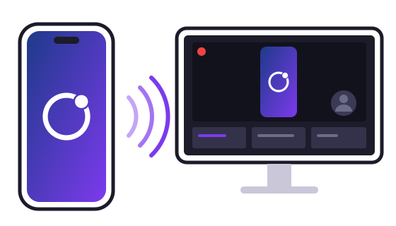

Your iPhone screen on your PC, ready for OBS.
MirrorLoop streams the screen and audio of your iPhone to a Windows PC on your home network. Free, no ads, no servers.

How it works
-
The iPhone streams
The app captures the screen and audio and sends them over your home network, encrypted.
-
The PC receives
MirrorLoop for Windows decodes them and shows them in sync, with very little delay.
-
OBS goes live
Add the MirrorLoop source to your scene and stream to Twitch, YouTube or wherever you like.
What it does
-
Screen and audio
In sync, even while the app is in the background.
-
Three quality levels
HD, Full HD at 60 fps, or Maximum: the exact resolution of the iPhone screen.
-
Pairing with a code
The same 6-digit code on both screens, the first time only. Then it reconnects by itself.
-
Encrypted and local
Everything stays on your home network: no servers, no accounts, no data collected.
-
A source for OBS
Video and audio straight into OBS Studio: no window capture needed.
Download
Windows
Windows 11 (64-bit) · free
The receiver, with the OBS plugin.
Or the classic installer: version 0.14.0, 44 MB · Only the OBS plugin: .zip file · all versions · code signing policy
iPhone
iOS 27 or later.
What you need
- An iPhone with iOS 27 or later.
- A PC with Windows 11 (64-bit).
- iPhone and PC on the same home network, set as a Private network in Windows.
- For live streaming: OBS Studio 31.1 or later.
Tip: use 5 GHz Wi-Fi with the iPhone close to the router, and connect the PC with a cable.
Code signing policy
Free code signing provided by SignPath.io, certificate by SignPath Foundation.
Signing is being set up: version 0.14.0 and earlier are not signed yet.
- What is signed: the Windows installer, the receiver and the OBS plugin, built by GitHub Actions from the source code in this project's repository. Libraries from other projects are included as their authors publish them (the .NET runtime is signed by Microsoft).
- Committers and reviewers: Andrei Telea
- Approvers: Andrei Telea. Every release is approved by hand before it is signed.
- Privacy: while it is running, the receiver announces itself on your home network (Bonjour) so the iPhone can find it, and it exchanges screen and audio only with the iPhone you paired with it. It sends nothing to the developer or to other servers. Details in the privacy policy.